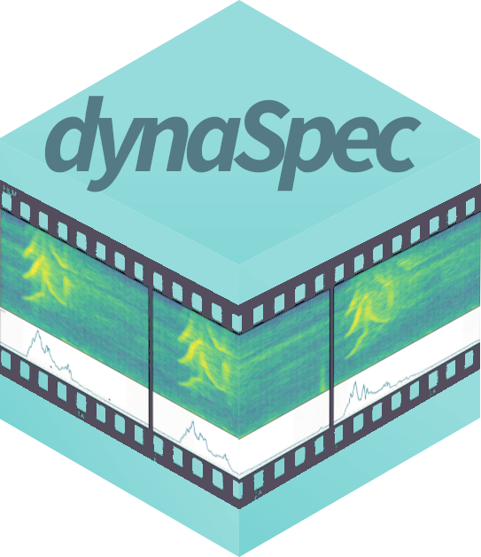
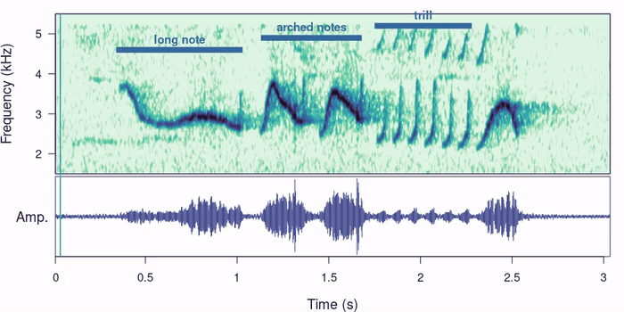
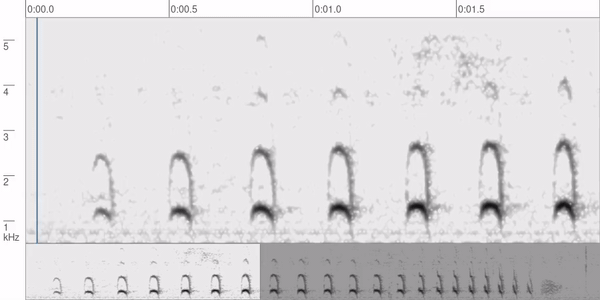
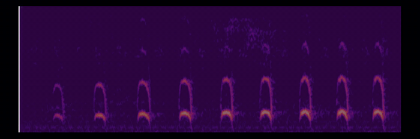

dynaSpec creates dynamic spectrograms: spectrograms that move along with the sound, ready for presentations, teaching or sharing online, without taking screen recordings of another program. They are shown as interactive web pages (with the sound embedded, click-to-play and buttons to slow the sound down), which work in R Markdown and Quarto documents, and can also be saved as videos (mp4). It builds on seewave and tuneR.
Dynamic spectrograms are built in layers, as ‘ggplot2’ graphs: dynaspec() takes the sound, and layers are added with + (only the panels added are shown):
| Layer | What it does |
|---|---|
ds_spectrogram() |
Adds a spectrogram (window length, palette, amplitude range, …) |
ds_oscillogram(), ds_envelope()
|
Add an oscillogram or an amplitude envelope (above or below the spectrogram) |
ds_spectrum() |
Adds a power spectrum next to the spectrogram |
ds_overview() |
Adds a lower panel with the whole sound to scrolling spectrograms |
ds_annotations() |
Highlights parts of the sound with translucent boxes, borders and labels (e.g. from a selection table) |
ds_captions() |
Text at a fixed position shown during a time range, like subtitles |
ds_theme(), ds_theme_dark(), … |
Axis titles, fonts, colors of the figure and plot, and preset themes |
ds_player() |
Playback controls of web pages (speed slider, loop, volume, download, …) |
ds_static(), ds_scrolling() or ds_paged()
|
Style of the dynamic spectrogram (see below) |
The package offers three styles of dynamic spectrogram:
| Style | What it looks like |
|---|---|
Static (ds_static(), default) |
A play line moves over the whole spectrogram (and oscillogram), which can be split in several rows |
Scrolling (ds_scrolling()) |
The spectrogram scrolls from right to left past the “play” line, as in the Macaulay Library (the line only moves at the start and the end, so the window is always full of sound) |
Paged (ds_paged()) |
A spectrogram (or several “pages”) revealed by a sliding highlight box, as in Adobe Audition’s spectral view |
What it looks like
The previews below are silent animations made from videos saved with save_dynaspec() (in R, printing the objects shows interactive web pages with sound).
Static spectrogram with an oscillogram, annotation lines and the ‘mako’ theme:
st <- data.frame(start = c(0.34, 1.13, 1.75, 2.34), end = c(1.03, 1.68, 2.33, 2.55),
labels = c("long note", "arched notes", "trill", "end note"), y = c(4.6, 4.9, 5.4, 4))
dynaspec(scythebill, flim = c(1.5, Inf)) +
ds_spectrogram(wl.ms = 18, collevels = seq(-50, 0, 1)) +
ds_oscillogram() +
ds_annotations(st, type = "line", line.freq = "y", labels = "labels") +
ds_theme_mako()
Scrolling spectrogram with an overview of the whole sound and the Macaulay Library look:
dynaspec(antshrike, flim = c(0.5, 5.5), tlim = c(0.1, 5)) +
ds_spectrogram(wl.ms = 23, collevels = seq(-50, 0, 1)) +
ds_overview() +
ds_theme_macaulay() +
ds_scrolling(t.display = 2, fix.time = FALSE)
Paged spectrogram, revealed by a sliding highlight box:
dynaspec(antshrike, flim = c(0.5, 5.5), tlim = c(0.1, 5)) +
ds_spectrogram(wl.ms = 23, collevels = seq(-50, 0, 1)) +
ds_paged(t.display = 2.5)
Contents: Installation · Quick start · Background · Citation
Vignette and articles (on the package website):
-
Creating dynamic spectrograms (vignette; also
vignette("dynaSpec")in R): basic usage of every layer and of the three styles, and how to save and embed them - Themes for dynamic spectrograms: theme settings and preset themes, including looks inspired by the Xeno-canto and Macaulay Library players
- Customizing dynamic spectrograms: spectrograms, panels, styles, annotations, captions, player controls and videos
Installation
Install latest version from CRAN:
install.packages("dynaSpec")Or install the development version from GitHub (requires remotes):
remotes::install_github("maRce10/dynaSpec")ffmpeg
Web pages do not need any external software. However, to create videos dynaSpec uses ffmpeg, which must be installed and available in the system path:
| Operating system | Command (in a terminal) |
|---|---|
| Windows |
winget install --id Gyan.FFmpeg -e (or download a build from gyan.dev and add its bin folder to the PATH) |
| macOS | brew install ffmpeg |
| Debian/Ubuntu | sudo apt install ffmpeg |
You can check that R finds it with:
Sys.which("ffmpeg")If ffmpeg is installed somewhere else, point R to the executable with Sys.setenv(ffmpeg = "path/to/ffmpeg").
Citation
Please cite dynaSpec as follows:
Araya-Salas, M. & Wilkins, M. R. (2026). dynaSpec: dynamic spectrogram visualizations in R. R package version 2.0.0.9000. https://github.com/maRce10/dynaSpec
Bugs and feature requests can be reported at https://github.com/maRce10/dynaSpec/issues.